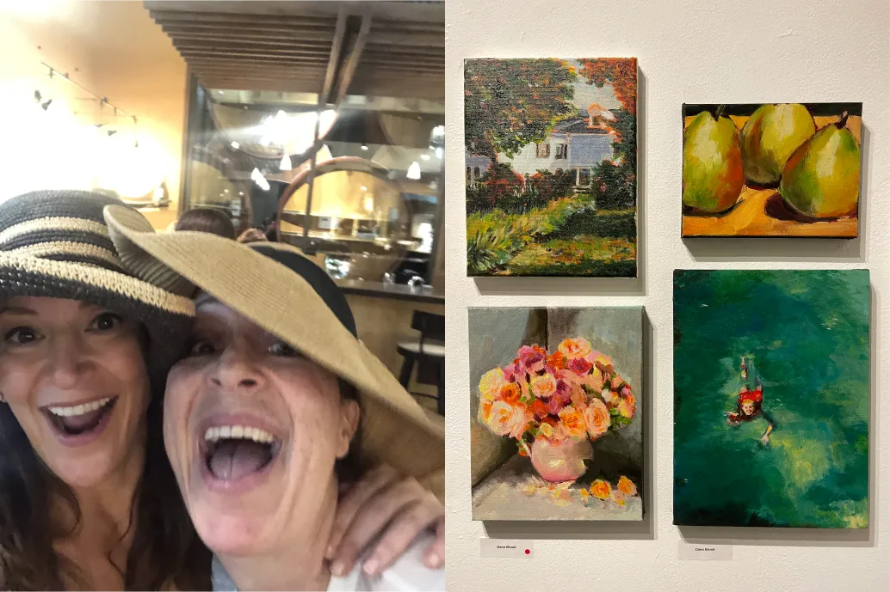

About Me

Back when I was renting one of my very first apartments in Los Angeles, I put out an ad in the LA Times classifieds to find apartment-mates. Somehow, I was lucky enough to find two renters who became lifetime friends. Patricia — pictured above in the dark striped hat — was one of them. She was painting back then: big, striking artworks using a paper plate for an easel, sitting in her room listening to the Cranberries. I would sit in my room and draw, listening to Patricia listen to the Cranberries. (I kid. I listened to my own CD's and mix tapes thank you very much.) But I never picked up paints until decades later... and it was thanks to Patricia. She and her fella happened upon a gallery with exquisite paintings, went in, met the artist, and inquired about classes. I was looped in (as well as a bunch of other fantastic people) and a tradition was born.
I've loved making art since I was a kid. I was lucky enough to have art classes in K-6 and then again in high school. I took a 101 in college and a 101 post-college when learning to do what I do now. In all of that learning, I never did any acrylic painting. Or if I did, I truly have no memory of it. It was all drawing, charcoals and pastels. And this is fine. I'm so thrilled to have found it at this stage in life. It is infuriating, meditative, humbling, and thrilling — and I dream of continuing to paint until I'm old (well, older).
I don't try to make big statements or challenge philosophical notions of light and dark or states-of-being. I just paint things for fun and I try to push myself with different approaches, new colors and varying subject matter. Mostly I paint what makes me happy.